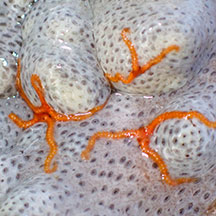
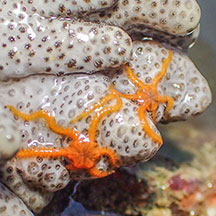
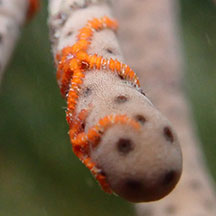

|
|
| brittle stars text index | photo index |
| Phylum Echinodermata > Class Stellaroida > Subclass Ophiuroidea |
| Tiny
orange brittle stars Ophiothela mirabilis* Family Ophiotrichidae updated Oct 2024 Where seen? These tiny brittle stars are sometimes seen on Asparagus soft corals, various soft corals and other cnidarians. A single host can be home to many of these tiny brittle stars. Features: Whole animal about 1cm wide. 5-6 arms with very small spines, held flat, along the sides of the arm. Uniformly bright orange. Sometimes confused with the Tiny colourful brittle star which are more colorful and found on a wider variety of animals. |

| Sometimes confused with the Tiny colourful brittle star which have colourful bands on their arms and central disk also with colourful markings. The two kinds of tiny brittle stars are sometimes seen together. |
 Chek Jawa, Oct 16 In Spiky flowery soft coral |
 Cyrene Reef, Aug 20 In Leathery sea fan |

*Species are difficult to positively identify without close examination.
On this website, they are grouped by external features for convenience of display
| Tiny orange brittle stars on Singapore shores |
On wildsingapore
flickr
|
| Other sightings on Singapore shores |
 On Black-and-white leathery soft coral. Terumbu Hantu, Aug 23 Photo shared by Johnathan Tan on facebook . |
.  On Black-and-white leathery soft coral. Big Sisters Island, Sep 20 Photo shared by Vincent Choo on facebook |
 On Leathery sea fan. St John's Island, Apr 25 Photo shared by Low Liong Leong on facebook . |
|
Acknowlegement
|